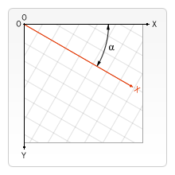

RETURN TO INDEX
LESSON 6: ADVANCED O.O.P
In this lesson we will start to cover code from a higher level perspective by introducing a small game/animation building library called barebones.js. The goal will be to understand more O.O.P and programming concepts that will give you the ability to use, extend, or write your own libraries and games.
"I used to play sports. Then I realized you can buy trophies. Now I’m good at everything."
~ Mitch Hedberg
CODE
The code for this section is too long to include in the page.
Open link to the program in the example section, right click the page, and select view source. From this view you can view the HTML and all linked CSS, JAVASCRIPT, and assets.
The link to barebones.js will provide you with the complete library code.
The link to script.js will provide you with the example code.
NOTE: [CMD or CTRL] + U will usually view page source as well.
TREES
In the coding world you might hear about trees. But not the kind that you chop down and turn into an axe handle to chop down more trees. Trees in this context are a structure or representation of data.
If you really think about it, it is very hard to think up a representation of the ACTUAL structure of data at its fundamental level.
That being said you gotta pick something if you are going to get anything done without going insane in the process.
Trees are a common and often effective structure for your data. Trees have a root, the topmost(the tree is upside down) node(part). Trees are connected by branches that connect to nodes.
NOTE: Many terms are uses interchangeably when it comes to these thing. Often the parent, child, ancestor, sibling terms are used with trees. Like an ancestry tree.
A generally theme with trees is that they do not form circular references, they work like a normal tree, they branch, but do not grow back into themselves. That would just be a graph.
Trees are nice because you can write a set of instructions to traverse and scan the contents of a tree in specific ways. A graph with circular references could lead you into infinite loops or hidden passages.
If you look around, trees are everywhere. JAVASCRIPT is built on an inheritance tree. The DOM is also know as the DOM tree. This course is also going to use trees a lot.
This course will mainly use trees in two ways. It will explain how to extend JAVASCRIPT's prototype tree, and it will show you how to create your own universe tree.
UNIVERSE TREE
In the coming projects you will be creating your own universes of sorts.
The universe will be where your game or animation exists, where all of the instances of everything exist.
However since you want to be able to control your universe, it will be made into a tree.
This way if you want you can clip branches, traverse nodes, or suspend functionality and resources to a branch, you can.
A universe tree could look something like this graphic, the universe tree for an asteroids game(lesson 7).

A universe tree can be a way of modularizing the different portions of your universe.
Since the nodes(class instances) don't actually exist in memory as a tree, you have to artificially represent that tree somehow. This can be done by each node storing a reference to it's parent, if it has one.
console.log(ship.parent);
// OUTPUTS Asteroids
Every node in the tree, aside from the root node, must have a parent.
console.log(asteroids.parent);
// OUTPUTS null
This, if you think about it, will give your tree its shape.
PROTOTYPE TREE
Almost all objects in JAVASCRIPT inherit from the Object prototype. They extend Object.
If you go looking at all of the constructors that JAVASCRIPT provides you will start to see that they have chains of inheritance. See next section on inspecting for instructions.
The library that the remaining lessons will be utilizing(barebones.js) was made by extending classes into other classes to share functionality without code repetition.
In order to use the library provided, you will want to extend the prototypes into your own unique ones.
In essence you will be adding branches to the tree.
This methodology is the beating heart of object oriented programming, if used properly it can give you incredible semantic power.
There is a reason it is used everywhere.
INSPECTING
When it comes to making more complex data structures, universes, and class instances that have a life of their own. You may be interested in peering into the inside of the universe to see what is REALLY going on behind the curtain.
Luckily the major browsers come with MASSIVELY powerful developer tools build in that can help with this and many other problems you will come across.
If you "console.log()" a reference to the root node of your universe at some point in time, you can then open the developer console and manually traverse the universe tree. You can view the state of all of the instances and see where they all are.
let TEST = null;
window.addEventListener('DOMContentLoaded', () => {
Array.from(document.querySelectorAll('.cell-division-target')).forEach(target => {
TEST = new cell_division.CellDivision({ target });
});
});
console.log(TEST);
NOTE: Developer tools can usually be opened by right clicking a page and selecting inspect. Or by the [CMD or CTRL] + J keyboard shortcut.
Once the console is open and the instance is visible, simply use the dropdowns to travel all the way down the universe tree, or up the prototype trees.
WARNING: Developer tools can sometimes provide old, new, or combined displays of state data. Just because you console.log at a specific time does not mean you are looking at a perfect snapshot of the universe at that time.
Here is a look at the example universe tree for this lesson in the Chrome dev-tools console.
From here you can open up the object to look inside.
It can be incredibly informing to actually see the state and structure of things as they occur, rather than as you expect it to be.
There's a lot going on in that image but don't worry, as you build out your own classes you will recognize your own properties and methods.
You can see that since the universe extends list that it has a _children array with all of the branches of the tree connected to this node.
So for this universe it is just a StateManager and a bunch of Cells.
You can continue to dig deeper by opening up a cell.
This process goes on forever down into the tree.
Now back to the root class.
If you look down at the very bottom of the list you will see the prototype dropdown. You can open this up to see not just the properties of this object, but of the prototype it inherits from. This goes for any object in devtools.
Then you can open up the prototype's prototype!
And again!
All the way up to the top of the barbones.js prototype tree.
And finally to the Object prototype itself.
This flow can be great for debugging and digging out pesky problems that you didn't even know existed. As your universes and data stuctures become more complex you should find ways to make yourself as familiar with them as possible.
You are encouraged to explore more developer tools, they can really help you out.
POLYMORPHISM
Polymorphism is an object oriented programming practice where you try and make classes that are as flexible as possible and can be used in as many places as possible.
The interface class of barebones.js is very polymorphic, it can be inherited from anywhere within the prototype tree without conflicts and provides functionality that translates to a variety of different classes.
The benefit of polymorphism is reusable code and easier to use API's and user interfaces.
The downside is that when you make many things dependent on one super class, certain changes can break some classes while fixing the others. When you come across problems like this it is better to branch or compose new classes than to try and make one SUPER super class.
Unfortunately JAVASCRIPT does not natively support multiple inheritance, meaning a class can only inherit from one other class at most. This can lead to cases where code must be repeated for incompatible branches.
That being said polymorphism as a concept is a very powerful tool for improving your API's and code modularization.
For instance, most all of the classes in the barebones.js tree use options objects as inputs with default values instead of regular arguments so that a user can input a wide range of things and still create a working program(sometimes).
VECTORS
Okay, so computers are pretty dependent on math, and so are the games you want to create.
Luckily for us you can, using JAVASCRIPT classes, write all of the logic for a type of math once, then use it a million times without ever thinking about it again.
Vectors take up a massive section of linear algebra and other maths. They are extremely powerful and relate to scalars and matrices. They can be of infinite length or dimension and represent anything that you want.
For the purposes of two dimensional games and animations with canvas, you only need one type of vector. Two component(dimensional) vectors with a small set of methods.
You will be using vectors(and already have), to represent mostly position, scale, direction, and velocity.
const position = { x: 20, y: 50 };
This object of x and y coordinates is a vector, representing position on a 2d graph, like canvas.
X is how far from the left side of the canvas, Y is how far from the top.
const scale = { x: 2, y: 2 };
This vector represents scale, meaning how much to blow up or down the object by width and height. In this case it is doubled.
const direction = { x: 0, y: 1 };
This vector represents the direction straight down. Since if you moved plus one on the y axis and zero on the x, you would be one unit lower on the canvas.
const velocity = { x: 20, y: 0 };
This one represents velocity, which is the same as direction, but it includes magnitude, or how "fast" an object moves each time time happens, or each frame.
This one would move straight right on the canvas 20 units every frame.
Now say for instance that you had an object with the velocity going down to the right 20 units per frame on both. But you wanted to slow it down by half. You would have to divide each part by 2 individually.
const velocity = { x: 20, y: 20 };
velocity.x /= 2;
velocity.y /= 2;
console.log(velocity);
// OUTPUTS { x: 10, y: 10 }
That is not too bad for this simple operation, but what about when you need to perform a sequence of complex operations. It can become verbose very quickly and prone to error since you are changing vector state.
const velocity = { x: 20, y: 20 };
const halving_vector = { x: 2, y: 2 };
velocity.x = (velocity.x / halving_vector.x) + 0.5 * (halving_vector.x);
velocity.y = (velocity.y / halving_vector.y) + 0.5 * (halving_vector.y);
console.log(velocity);
// OUTPUTS { x: 11, y: 11 }
This is when a vector class comes in handy. You can encode these operations into methods of a class instance. Whether simple addition or more complex trigonometry, you only have to code them once and you can use them forever.
const vec_one = new Vector(25, 25);
const vec_two = new Vector(5, 5);
const vec_three = vec_one.times(vec_two).minus(vec_one.divided_by(2, 2));
// OUTPUTS Vector { x: 112.5, y: 112.5 }
This is much more semantic and flexible.
The Vector class of barebones.js is likely the most useful class that the library provides. Vector does not inherit from anything else in the tree, it stands alone.
Lets take a look at the code for the Vector class.
class Vector {
constructor(x = 0, y = 0) {
const temp = Vector.require_vector_or_numeric(x, y, true);
this.x = temp.x;
this.y = temp.y;
}
static require_vector_or_numeric(vec, b, plain = false) {
if (vec instanceof Vector) return vec;
const args = [vec, b];
if (args.every(v => help.require_numeric(v, true))) return !plain && new Vector(vec, b) || { x: vec, y: b };
throw new Error(`VECTOR SAYS: INPUT MUST BE VECTOR OR NUMERIC BUT GOT: ${args}`);
}
static random_normal(x = 0, y = 0) {
return new Vector(
!x && +`${Math.random() > 0.5 ? '-' : ''}${Math.random()}` || x,
!y && +`${Math.random() > 0.5 ? '-' : ''}${Math.random()}` || y
);
}
static radians_from_vector(vec, b) {
const temp = Vector.require_vector_or_numeric(vec, b);
return Math.atan2(temp.y, temp.x);
}
static radians_to_unit_circle_vector(rads = 0) {
return new Vector(Math.cos(rads), Math.sin(rads));
}
static random_unit_circle_vector() {
const rads = ((2 * Math.PI) * Math.random());
return Vector.radians_to_unit_circle_vector(rads);
}
static degrees_to_unit_circle_vector(degs = 0) {
const rads = help.degrees_to_radians(degs);
return Vector.radians_to_unit_circle_vector(rads);
}
duplicate() {
return new Vector(this.x, this.y);
}
plus(vec, b) {
const temp = Vector.require_vector_or_numeric(vec, b);
return new Vector(this.x + temp.x, this.y + temp.y);
}
minus(vec, b) {
const temp = Vector.require_vector_or_numeric(vec, b);
return new Vector(this.x - temp.x, this.y - temp.y);
}
times(vec, b) {
const temp = Vector.require_vector_or_numeric(vec, b);
return new Vector(this.x * temp.x, this.y * temp.y);
}
divided_by(vec, b) {
const temp = Vector.require_vector_or_numeric(vec, b);
return new Vector(this.x / temp.x, this.y / temp.y);
}
modulused_by(vec, b) {
const temp = Vector.require_vector_or_numeric(vec, b);
return new Vector(this.x % temp.x, this.y % temp.y);
}
distance_from(vec, b) {
const temp = Vector.require_vector_or_numeric(vec, b);
return (Math.hypot(temp.x - this.x, temp.y - this.y));
}
mirror_axis(x = false, y = false) {
return new Vector(this.x * +`${x && '-' || ''}1`, this.y * +`${y && '-' || ''}1`);
}
equals(vec, b) {
const temp = Vector.require_vector_or_numeric(vec, b);
return (this.x === temp.x && this.y === temp.y);
}
normalized_traditional(scale = 1) {
const length = this.length;
if (Math.abs(length) < 0.0000001) return this.duplicate();
return new Vector(scale * this.x / length, scale * this.y / length);
}
normalized() {
const max = Math.max(Math.abs(this.x), Math.abs(this.y));
if (max < 0.0000001) return this.duplicate();
return this.divided_by(max, max);
}
angle_to(vec, b) {
const temp = Vector.require_vector_or_numeric(vec, b);
return Vector.radians_from_vector(temp.minus(this));
}
get dot_product() {
return (this.x * this.x + this.y * this.y);
}
get length() {
return (Math.sqrt(this.dot_product));
}
get array() {
return [this.x, this.y];
}
get plain() {
return { x: this.x, y: this.y };
}
}
Some of you might be screaming right now saying that this class is extremely functional rather that object oriented since all of the methods return something without changing any state. You are right, but the wise programmer knows when to break the rules.
You don't need to understand every method in this class but here is a list of short descriptions.
-
constructor
- ACCEPTS ANOTHER VECTOR OR TWO NUMBERS AS PARAMETERS AND RETURNS A VECTOR REPRESENTING THE COMPONENTS
-
static require_vector_or_numeric
- ACCEPTS ANOTHER VECTOR OR TWO NUMBERS AS PARAMETERS AND RETURNS A VECTOR REPRESENTING THE COMPONENTS OR THROWS AN ERROR
-
static random_normal
- ACCEPTS OPTIONAL ARGUMENTS REPRESENTING FROZEN X AND Y VALUES. NON FROZEN VALUES ARE RANDOMIZED AND A NEW VECTOR IS RETURNED.
-
static radians_from_vector
- ACCEPTS VEC OR NUMS REPRESENTING A DIRECTION VECTOR AND RETURNS AN ANGLE.
-
static radians_to_unit_circle_vector
- ACCEPTS AN ANGLE IN RADIANS AND RETURNS A DIRECTION VECTOR ON THE UNIT CIRCLE.
-
static random_unit_circle_vector
- GENERATES A RANDOM POINT ON THE UNIT CIRCLE.
-
static degrees_to_unit_circle_vector
- ACCEPTS AN ANGLE IN DEGREES AND RETURNS A DIRECTION VECTOR ON THE UNIT CIRCLE.
-
duplicate
- COPIES AND RETURNS A NEW INSTANCE OF THE VECTOR.
-
plus
- ACCEPTS VEC OR NUMS, ADDS COMPONENTS AND RETURNS NEW VECTOR.
-
minus
- ACCEPTS VEC OR NUMS, SUBTRACTS COMPONENTS AND RETURNS NEW VECTOR.
-
times
- ACCEPTS VEC OR NUMS, MULTIPLIES COMPONENTS AND RETURNS NEW VECTOR.
-
divided_by
- ACCEPTS VEC OR NUMS, DIVIDES COMPONENTS AND RETURNS NEW VECTOR.
-
modulused_by
- ACCEPTS VEC OR NUMS, DIVIDES COMPONENTS AND RETURNS NEW VECTOR OF REMAINDERS.
-
distance_from
- ACCEPTS VEC OR NUMS, USES PYTHAGOREAN THEOREM TO CALCULATE DISTANCE AND RETURNS A NUMBER.
-
mirror_axis
- ACCEPTS X AND Y ACTIVATION ARGS, REVERSES SIGN OF ACTIVATED COMPONENTS AND RETURNS NEW VECTOR.
-
equals
- ACCEPTS VEC OR NUMS, COMPARES BOTH VECS FOR STRICT EQUALITY AND RETURNS BOOLEAN.
-
normalized_traditional
- NORMALIZES BASED ON SQUARE ROOT OF THE DOT PRODUCT AND RETURNS NEW VECTOR.
-
normalized
- USES MAX VALUE TO NORMALIZE AND RETURNS NEW VECTOR.
-
get dot_product
- ADDS THE SQUARES OF THE COMPONENTS AND RETURNS NEW VECTOR.
-
get length
- SQUARE ROOT OF LENGTH RETURNS NEW VECTOR.
-
get array
- RETURNS ARRAY OF THE VECTOR WITH THE INDEXES [x, y]
-
get plain
- RETURNS A PLAIN OBJECT COPY OF THE VECTOR
Yeah thats a lot but if you break each part down none of them are that complex.
You will become more comfortable with vectors the more you use them.
If you wanted to really strengthen your understanding, try and rewrite this class based on the descriptions alone. Make sure to test and compare each method.
SHAPES AND COLLISIONS
Geometry has been studied for a very long time and the great minds have come up with some amazing tools for representing the world as mathematical shapes.
For the purposes of these tutorials however, you will only need to worry about two shapes.
Circles and Rectangles.
CIRCLES
Circles are easy to represent, just a position vector and a radius(distance from center point to the border).
It is easy to see if two circles collide because if the sum of both circles radii are less than the distance, you have a collision.
this.position.distance_from(shape.position) < this.radius + shape.radius
RECTANGLES
Rectangles are slightly more complicated. They are represented by a position vector(top left point) and a size vector(bottom right point from the top left).
Collisions between rectangles are determined by the conditional:
this.position.x < shape.position.x + shape.size.x
&&
this.position.x + this.size.x > shape.position.x
&&
this.position.y < shape.position.y + shape.size.y
&&
this.position.y + this.size.y > shape.position.y
Determining the collision between a circle and a rectangle requires that you find the closest point on the rectangles perimeter and check to see if this distance from this point to the circles center position is less than the circles radius.
alternate.sort(a => a instanceof Rectangle ? -1 : 1);
const closest_point = new Vector(
help.clamp(alternate[1].position.x, alternate[0].position.x, alternate[0].position.x + alternate[0].size.x),
help.clamp(alternate[1].position.y, alternate[0].position.y, alternate[0].position.y + alternate[0].size.y)
);
return (alternate[1].position.distance_from(closest_point) <= alternate[1].radius);
Luckily since most objects within a game or animation will be rectangular since they are images or text, the checks are simple. Later on you will learn about complex collision detection for images pixel by pixel.
barebones.js provides Rectangle and Circle classes that include these methods among others that are useful for comparing and altering shapes representing objects within a universe.
class Shape {
constructor(options = {}) {
help.interface_only(this, Shape);
this._options = options;
}
intersects_with(shape) {
if (!(shape instanceof Shape)) {
throw new Error(`SHAPE SAYS: INPUT MUST BE CIRCLE OR RECTANGLE BUT GOT: ${shape}`);
}
const alternate = [this, shape];
if (alternate.every(v => v instanceof Circle)) {
return (this.position.distance_from(shape.position) < this.radius + shape.radius);
}
else if (alternate.every(v => v instanceof Rectangle)) {
return (
this.position.x < shape.position.x + shape.size.x
&&
this.position.x + this.size.x > shape.position.x
&&
this.position.y < shape.position.y + shape.size.y
&&
this.position.y + this.size.y > shape.position.y
);
}
else {
alternate.sort(a => a instanceof Rectangle ? -1 : 1);
const closest_point = new Vector(
help.clamp(alternate[1].position.x, alternate[0].position.x, alternate[0].position.x + alternate[0].size.x),
help.clamp(alternate[1].position.y, alternate[0].position.y, alternate[0].position.y + alternate[0].size.y)
);
return (alternate[1].position.distance_from(closest_point) <= alternate[1].radius);
}
}
}
class Circle extends Shape {
constructor(options) {
super(options);
this.position = Vector.require_vector_or_numeric(this._options.position);
this.radius = help.require_numeric(this._options.radius);
}
duplicate() {
return new Circle({
position: this.position.duplicate(),
radius: this.radius
});
}
contains(vec, b) {
const temp = Vector.require_vector_or_numeric(vec, b);
return (this.position.distance_from(temp) <= this.radius);
}
}
class Rectangle extends Shape {
constructor(options) {
super(options);
this.position = Vector.require_vector_or_numeric(this._options.position);
this.size = Vector.require_vector_or_numeric(this._options.size);
}
duplicate() {
return new Rectangle({
position: this.position.duplicate(),
size: this.size.duplicate()
});
}
contains(vec, b) {
const temp = Vector.require_vector_or_numeric(vec, b);
return (
(temp.x > this.position.x && temp.x < (this.position.x + this.size.x))
&&
(temp.y > this.position.y && temp.y < (this.position.y + this.size.y))
);
}
intersection_depth(rectangle) {
if (!(rectangle instanceof Rectangle)) {
throw new Error(`RECTANGLE SAYS: INPUT MUST BE INSTANCE OF RECTANGLE BUT GOT: ${rectangle}`);
}
const min_distance = this.size.plus(rectangle.size).divided_by(2, 2);
const distance = this.center.minus(rectangle.center);
return new Vector(
distance.x > 0 ? min_distance.x - distance.x : -min_distance.x - distance.x,
distance.y > 0 ? min_distance.y - distance.y : -min_distance.y - distance.y
);
}
intersection(rectangle) {
if (!(rectangle instanceof Rectangle)) {
throw new Error(`RECTANGLE SAYS: INPUT MUST BE INSTANCE OF RECTANGLE BUT GOT: ${rectangle}`);
}
const depth = this.intersection_depth(rectangle);
return new Rectangle({
position: new Vector(
Math.max(this.position.x, rectangle.position.x),
Math.max(this.position.y, rectangle.position.y)
),
size: new Vector(
Math.abs(depth.x),
Math.abs(depth.y)
)
});
}
scaled_up_by(vec, b) {
const temp = Vector.require_vector_or_numeric(vec, b);
const increase = this.size.times(temp).minus(this.size);
return new Rectangle({
position: this.position.minus(increase),
size: this.size.plus(increase.times(2, 2))
});
}
scaled_down_by(vec, b) {
const temp = Vector.require_vector_or_numeric(vec, b);
const decrease = this.size.times(temp).minus(this.size);
return new Rectangle({
position: this.position.plus(decrease),
size: this.size.minus(decrease.times(2, 2))
});
}
get center() {
return this.position.plus(this.size.divided_by(2, 2));
}
get array() {
return [...this.position.array, ...this.size.array];
}
get random_within() {
return this.size.minus(this.position).times(Math.random(), Math.random()).plus(this.position);
}
get random_within_middle() {
return this.scaled_down_by(1.15, 1.15).random_within;
}
}
Both classes have a contains method to determine if a position vector is within the shape.
You will have a chance to use all of these methods in the lessons to come.
ORIGIN
Origin is a math concept for linear transformations.
For your purposes the origin only really matters then it comes to rotations.
Imagine if you had a piece of paper on a table.
Now you place your finger on the top left corner of the paper.
If you rotate the paper 180 degrees, it will rotate about your finger, and be upside down and in a different spot on the table.
Generally this is not what you want when you are rotating an object in canvas. You want it to rotate about the center of the object.
If you placed your finger in the center of the piece of paper and rotated it 180 degrees. This time the paper would be upside down but in the same spot.
This effect is achieved in canvas by translating(shifting or moving) the origin. The origin of the canvas is the finger it rotates about.
So for an object in your universe, its local origin will be a vector representing how to get to the it's center. That way the application knows where to move the canvas origin so that it is in the center of the object.
That way when you perform rotations it doesn't go flying around unexpectedly.
For example, say you had a rectangle like so.
const rect = new Rectangle({
position: new Vector(100, 100),
size: new Vector(10, 10),
});
The center of the rectangle would be at the vector [105, 105]. So the way to get there from the position would be to move up 5 and over 5. Thus the object local center origin would be [5, 5]
There may be times when you would want the origin elsewhere, but that is uncommon.
Luckily for your purposes origin has already been accounted for, for the most part, in the barebones.js infrastructure.
Feel free to take a closer look at the CanvasManager and Sprite classes of barebones.js to get a deeper understanding of how origin is weaved into the data and the rendering pipeline.
On that note, you should get familiar with some of the class implementations in barebones.js
INTERFACE
The root node in the barebones.js tree is the Interface class. Interface is the class that most all of the classes within the tree inherit from, at the top. Interface provides the "interface" for all of the descendants to interact seamlessly.
The Interface class is not allowed to be instantiated directly, rather it is intended to be inherited from.
The Interface class has a property called universe_object that must be set during construction in the options object if you want it to have the ability to rendered visually or exist within the simulated physical universe.
The Interface class has methods for searching and traversing the universe tree.
The Interface class also has many getters and setters that provide easy access to universal properties but limit write access to the right parties.
The Interface class contains the layer property which controls the order in which objects are drawn on top of each other. The higher the layer, the more likely it will be drawn on top. Like z-index in CSS.
The Interface class is integral to the seamless functionality and interactivity of the objects in a universe.
class Interface {
constructor(options = {}) {
help.interface_only(this, Interface);
this._options = options;
this.parent = options.parent || null;
this.id = this._options.id || Symbol();
this.initialized = false;
this.state_ceiling = options.state_ceiling ?? false;
this._memoized = {};
this.universe_object = this._options.universe_object ?? false;
if (this.universe_object) {
this.layer = this._options.layer || -1;
this.position = this._options.position || new Vector();
this.velocity = this._options.velocity || new Vector();
this.origin = this._options.origin || new Vector();
this.scale = this._options.scale || new Vector(1, 1);
this.visible = this._options.visible ?? true;
this.rotation = this._options.rotation || 0;
}
else {
this.visible = this._options.visible ?? false;
}
}
initialize() {
this.initialized = true;
}
update() {
this.universe_object && (this.position = this.position.plus(this.velocity));
}
render() { }
on_delete() { }
reset() {
this.clear_cache();
}
handle_input(e) { }
is_instance(v) {
return (v && v instanceof this.constructor || false);
}
is_a(v) {
return (v && v.constructor === this.constructor || false);
}
clear_cache() {
this._memoized = {};
}
static is_a(v) {
return (v && v.constructor === Interface || false);
}
static is_instance(v) {
return (v && v instanceof Interface || false);
}
static require_is_instance(v) {
if (!Interface.is_instance(v)) {
throw new Error(`INTERFACE SAYS: INPUT MUST BE INSTANCE OF INTERFACE BUT GOT: ${v}`);
}
}
get root() {
!this._memoized._hidden_root
&& (this._memoized._hidden_root = this.parent && this.parent.root || this);
return this._memoized._hidden_root || null;
}
get state_parent() {
!this._memoized._hidden_state_parent
&&
(this._memoized._hidden_state_parent =
this.parent && this.parent.state_ceiling
&& this.parent || this.parent && this.parent.state_parent || null);
return this._memoized._hidden_state_parent || null;
}
get audio() {
return this.root._audio;
}
set audio(v) {
this.root === this ? (this.root._audio = v) : null;
}
get assets() {
return this.root._assets;
}
set assets(v) {
this.root === this ? (this.root._assets = v) : null;
}
get audio_context() {
return this.root._audio_context;
}
set audio_context(v) {
this instanceof AudioManager ? (this.root._audio_context = v) : null;
}
get mouse() {
return this.root._mouse;
}
set mouse(v) {
this instanceof UserInterface ? (this.root._mouse = v) : null;
}
get keyboard() {
return this.root._keyboard;
}
set keyboard(v) {
this instanceof UserInterface ? (this.root._keyboard = v) : null;
}
get touch() {
return this.root._touch;
}
set touch(v) {
this instanceof UserInterface ? (this.root._touch = v) : null;
}
get canvas() {
return this.root._canvas || null;
}
set canvas(v) {
this instanceof CanvasManager ? (this.root._canvas = v) : null;
}
get context() {
return this.root._context || null;
}
set context(v) {
this instanceof CanvasManager ? (this.root._context = v) : null;
}
get offscreen_canvas() {
return this.root._offscreen_canvas || null;
}
set offscreen_canvas(v) {
this instanceof CanvasManager ? (this.root._offscreen_canvas = v) : null;
}
get offscreen_canvas_context() {
return this.root._offscreen_canvas_context || null;
}
set offscreen_canvas_context(v) {
this instanceof CanvasManager ? (this.root._offscreen_canvas_context = v) : null;
}
get now() {
return this.root._now || 0;
}
set now(v) {
this.root === this ? (this.root._now = v) : null;
}
get then() {
return this.root._then || 0;
}
set then(v) {
this.root === this ? (this.root._then = v) : null;
}
get time_elapsed() {
return (this.root._now - this.root._then);
}
get universe_position() {
return this.universe_object
&&
(this.parent && this.parent.universe_position.plus(this.position) || this.position.duplicate())
||
new Vector();
}
get layer() {
return this.universe_object && this._layer || -1;
}
set layer(v) {
if (!this.universe_object) return;
this._layer = v;
this.parent instanceof List && this.parent.request_layer_sort();
}
}
You can think of the Interface as the high school that all objects have to go to before they can go to college to learn a specialty. Every object knows what they were taught in high school, but only some know a specialty. Since they all learned how to write a decent email in high school, they can communicate with each other easily.
LISTS
Lists, in the context of barebones.js are a way to create branches on the universe tree.
Lists are very important to the functionality of the objects in the universe since they are responsible for propagating all of the animation phase method calls to their children.
Lists also come with some very powerful searching and memoizing methods for performing DFS within their branch and any sub branches recursively.
Lists are great because you can just add objects to them and they are automatically initialized within the universe and will be updated and drawn. As long as the list itself is initialized within the universe and is itself a universe_object.
Lists are so important that even the universe itself is a list.
class List extends Interface {
constructor(options) {
super(options);
this._children = [];
this._queue = [];
this.visible = this._options.visible || true;
}
initialize() {
this._children.forEach(v => !v.initialized && v.initialize());
super.initialize();
}
update() {
this._prune();
this._handle_queue();
this._children.forEach(v => !v.initialized && v.initialize());
this._children.forEach(v => v.update());
}
render() {
if (!this.visible) return;
this._children.forEach(v => v.visible && v.render());
}
handle_input(e) {
this._children.forEach(v => v.handle_input(e));
}
reset() {
this._handle_queue();
this._children.forEach(v => v.reset());
super.reset();
}
_prune() {
[...this._children, ...this._queue].forEach(v => {
if (v.delete_me) {
v.clear_cache();
v.on_delete();
v.parent = null;
}
});
this._children = this._children.filter(v => !v.delete_me);
this._queue = this._queue.filter(v => !v.delete_me);
}
_handle_queue() {
if (!this._queue.length) {
return;
}
this._queue = this._queue.flat(Infinity);
this._queue = this._queue.filter(v => Interface.is_instance(v));
this._queue.length && this._children.push(...this._queue);
this._children.forEach(v => {
v.parent = this;
!v.initialized && v.initialize();
});
this._queue = [];
}
request_add(v) {
this._queue.push(v);
}
add(v) {
Interface.require_is_instance(v);
v.parent = this;
this._children.push(v);
this.request_layer_sort();
return v;
}
remove(v) {
v.clear_cache();
v.on_delete();
v.parent = null;
this._children = this._children.filter(x => x !== v);
}
clear() {
this._handle_queue();
this._children.forEach(v => {
v.parent = null;
v.clear_cache();
});
this._children = [];
}
find_id(id = null) {
if (!this._memoized[id]) {
for (let i = 0, j = this._children.length; i < j; i++) {
if (this._children[i].id === id) {
this._memoized[id] = this._children[i];
break;
}
if (this._children[i] instanceof List) {
const v = this._children[i].find_id(id);
if (v !== null) {
this._memoized[id] = v;
break;
}
}
}
}
return this._memoized[id] || null;
}
find(callback_or_reference = () => true) {
for (let i = 0, j = this._children.length; i < j; i++) {
if (callback_or_reference instanceof Function) {
if (callback_or_reference(this._children[i]) === true) {
return this._children[i];
}
}
else if (this._children[i] === callback_or_reference) {
return this._children[i];
}
if (this._children[i] instanceof List) {
const v = this._children[i].find(callback_or_reference);
if (v !== null) {
return v;
}
}
}
return null;
}
find_all(callback = () => true) {
const output = [];
for (let i = 0, j = this._children.length; i < j; i++) {
if (callback(this._children[i]) === true) {
output.push(this._children[i]);
}
if (this._children[i] instanceof List) {
output.push(...this._children[i].find_all(callback));
}
}
return output;
}
request_layer_sort() {
this._children.sort((a, b) => a.layer && b.layer && a.layer - b.layer || -1);
}
}
Here is brief description of the methods.
-
initialize
- INITIALIZES ALL CHILDREN
-
update
- DELETES FLAGGED CHILDREN - HANDLES QUEUE / INITIALIZES QUEUED CHILDREN - UPDATES ALL CHILDREN
-
render
- IF THE LIST ITSELF IS VISIBLE RENDERS ALL CHILDREN
-
handle_input
- PROPAGATES TO ALL CHILDREN
-
reset
- HANDLES QUEUE AND RESETS ALL CHILDREN
-
_prune
- HIDDEN DELETES ALL FLAGGED CHILDREN AND CLEANES UP
-
_handle_queue
- HIDDEN FILTERS AND INCORPORATES THE QUEUE INTO CHILDREN
-
request_add
- ADD AN OBJECT TO THE QUEUE
-
add
- ADD AN OBJECT DIRECTLY TO THE LISTS CHILDREN
-
remove
- REMOVES AN OBJECT FROM THE LIST AND CLEANS UP
-
clear
- REMOVES ALL CHILDREN AND CLEANS UP
-
find_id
- RECURSIVELY PERFORM DEPTH FIRST SEARCH TO SEARCH BRANCH AND ALL SUB BRANCHES FOR AN OBJECT WITH A MATCHING ID RETURNS FIRST MATCH OR NULL - MEMOIZES RESULT FOR PERFORMANCE
-
find
- SEARCH BRANCH RECURSIVELY WITH A CALLBACK FUNCTION OR COMPARISON VALUE AND RETURN FIRST MATCH OR NULL
-
find_all
- SEARCH BRANCH RECURSIVELY WITH A CALLBACK FUNCTION AND RETURN AN ARRAY OF ALL MATCHES
-
request_layer_sort
- SORT CHILDREN BY LAYER
You are going to want to know that if you want to add an item to the list you should use the add or request_add methods. Outside or children objects should use the request_add method instead of add for control flow.
If you want to find an item within the list that the find_id method is the fastest since memoizes results. Other options are find and find_all which take callback functions.
Many of the barebones.js classes extend List and the structure of the tree relies heavily on their power.
You will see more use of the lists at the lessons progress.
UNIVERSE
The last barebones.js class you need to know about for this lesson is Universe.
The Universe class is the List that ties it all together.
It is meant to be extended and for that extension instance to be the root of the universe tree.
The Universe class is the only place where the manager classes are instantiated and stored.
The Universe class tracks timing and frame rate for the application.
The Universe class is where the main animation loop resides. This is the loop that will initiate the animation phase method chain reaction calls that will propagate throughout the entire connected universe tree every tick.
The async initialize method of the Universe class or it's extension is the only place where you should load assets.
The code is pretty concise:
class Universe extends List {
constructor(options) {
options.universe_object = true;
super(options);
this.target = this._options.target;
if (!this.target || !(this.target instanceof HTMLElement)) {
throw new Error(`${this.constructor.name}: NO TARGET ELEMENT`);
}
this._paused = false;
this._frame_rate_window = this._fresh_frame_window;
this.canvas_manager = new CanvasManager({
parent: this,
width: this._options.width || 2400,
height: this._options.height || 1200,
alpha: this._options.alpha || true
});
this.ui = new UserInterface({ parent: this });
this.assets = new AssetManager({ parent: this });
this.audio = new AudioManager({ parent: this });
this.state_manager = this.add(new StateManager({ parent: this }));
this.initialize();
}
async initialize() {
await super.initialize();
this._repeat();
}
update() {
super.update();
this.ui.update();
this.canvas_manager.update();
}
render() {
this.canvas_manager.clear();
super.render();
}
_repeat(time) {
if (!this._paused) {
this.now = time;
this._slide_window();
this.update();
this.render();
this.then = this.now;
}
window.requestAnimationFrame(t => this._repeat(t));
}
reset() {
super.reset();
this._frame_rate_window = this._fresh_frame_window;
}
_slide_window() {
this._frame_rate_window.shift();
this._frame_rate_window.push(this.frame_length);
}
get frame_length() {
return (Math.abs(this.now - this.then));
}
get average_frame_rate() {
return (this._frame_rate_window.reduce((v, acc = 0) => acc + v) / this._frame_rate_window.length);
}
get _fresh_frame_window() {
return new Array(100).fill(16.666);
}
}
What you need to remember is that Universe should be what your root universe class inherits from, it is the top dog of the universe, the beating heart, the engine.
There are more classes in barbones.js of course, for now these classes will be enough to build a proof of concept application.
HOW IT WORKS
If you open the link at the example section of this lesson you can take a look at the example and see how it works.
Essentially the appication spawns two instances of "Cell" that do not collide in the middle of the screen.
They are initialized with a little velocity moving in one direction or the other.
They are both of a random color.
Nothing much happens at first, but since they are instances of Cell, they inherit the functionality to divide into more cells. This happens.
When a cell divides it splits into two smaller cells, who inherit the color of the parent cell, along with a portion of it's velocity. Then the parent self destructs.
NOTE: Not that it really matters in this context but this is not really how cell division works in biology, real cells take in resources from the outside and shouldn't really change in size when they divide.
IDEA: With some minor tweaks, this example code could be modified to instead represent a form of atomic fission. Or maybe even a fission fusion combination like a hydrogen bomb. Bang.
Now that a cell has divided, and it's children have a bit more velocity, there becomes a chance that cells of opposite color will collide.
When two cells of opposite color collide, they both die, or are removed from the universe, same thing.
Since cells divide based on age with a bit of randomness, the more cells that exists, the more divisions that will occur per unit of time, exponentially.
It is interesting to see what color, if any, overtakes the other color. Kinda like a virus.
Eventually the population of cells causes the collision detection(Math.sqrt() specifically) to cause the framerate of the application to increase due to computation overload.
At the point when the rolling average framerate gets too high, the application resets.
As far as examples go, this one pretty well represents the life of class object instances and how they relate to physical reality.
CELL DIVISION
The actual codebase for this application is pretty small considering the simulation being implemented to this extent. This is the benefit of using a library or set of reusable classes.
'use strict';
const cell_division = (() => {
const {
Vector,
Circle,
Interface,
Universe
} = BAREBONES;
class Cell extends Interface { } // HIDDEN
class CellDivision extends Universe { } // HIDDEN
return {
CellDivision
};
})();
window.addEventListener('DOMContentLoaded', () => {
Array.from(document.querySelectorAll('.cell-division-target')).forEach(target => {
new cell_division.CellDivision({ target });
});
});
As you can see the classes for Cell and CellDivision have been hidden.
The rest of the boilerplate code for the application include enclosing the new classes in an IIFE, importing the needed classes from barebones.js, exporting the main universe class from the IIFE under the namespace cell_division, and instantiating the universe within the target element(s).
This boilerplate is a nice template to use when extending and utilising barebones.js, or any library or codebase for that matter.
Now you can look into the root universe class, CellDivision, which extends Universe. There should always be one of these acting as the universe root node. Anything else in the universe should stem from here.
class CellDivision extends Universe {
initialize() {
this.reset();
super.initialize();
}
}
Firstly the universe, during initialization, should also call it's own reset method. This is becuase in this case reset and initialize are one and the same and therefore can exist on one location, reset.
Don't forget to call the super method of any interface methods that are being extended. Since initialize is an interface method you must call super.initialize() within the extension. If you do not do this, it becomes an override, and the logic will not be inherited. This will probably break the application if you are extending animation phase methods.
class CellDivision extends Universe {
initialize() {
this.reset();
super.initialize();
}
update() {
if (this.average_frame_rate > 25) {
this.reset();
}
this._collision_detection();
super.update();
}
}
The update extension method does two new things.
First, it checks if the average frame rate, a property of any Universe instance, is too high. If it is too high, the animation resets.
Second, it calls the local collision detection method that doesn't exist yet.
Again since this is an extension method it calls the super method to preserve logic.
class CellDivision extends Universe {
initialize() { } // HIDDEN
update() { } // HIDDEN
reset() {
super.reset();
[...this._children, ...this._queue].forEach(v => v instanceof Cell ? v.delete_me = true : null);
this.add(new Cell(
{
position: new Vector((this.canvas.width / 1.5), this.canvas.height / 2),
velocity: new Vector(0.25, Math.random() * 0.4),
}
));
this.add(new Cell(
{
position: new Vector((this.canvas.width / 6), this.canvas.height / 2),
velocity: new Vector(-0.25, Math.random() * -0.4),
}
));
}
}
Within the reset extension method, which also acts as initialization, two main things are going on.
First, the aggregate array of the queue(objects that are about to go into the universe) and the children are looped over and thier delete flag is enabled. That is if they are a cell. In essence this deletes all cells in the universe.
Afterwards two new instances of Cell are created and added to the universe.
They both accept two options in this case, position and velocity.
This represents thier STARTING position and velocity. You are seeding the universe at this point.
The position and velocities are pretty self explanatory. The position is left of the middle of the canvas for one cell, and right of the middle for the other. This way they don't collide immediatly.
The velocities are small with a hair of randomness.
By starting the universe this way there is a gaurantee that the cells will have a chance to divide and collide.
The last peice of the universe root is the collision detection. Semantically, it would make more sense for each cell to handle it's own collision detection. However, from a performance standpoint, collision detection is often the most expensive operation in an animation, game, or simulation. For this reason, it is best to limit the number of collision checks to the absolute minumum while still enforcing the rule.
This collision method checks every cell against every other cell once, however, no two cells are checked against eachother twice. This is handled by the parent node, in this case, the root node.
IDEA: If you wanted to optimize even more, you could do a couple things. You could stagger the collision checks, only checking a portion of the cells each tick, then checking another portion the next tick. This way a collision might happen, but only be detected a tick late, but the speed would increase. Another would be to eliminate collisions using a rough distance caluculation instead of the pythagorean theorem(A**2 + B**2 === C**2) which uses Math.sqrt(), a notoriously expensive function.
The goal is to check any possible condition where a calculation can be avoided FIRST. In this way you reduce the number of calculations down to a smaller number, while also avoiding duplicate checks or checks against the same objects. If the objects pass all initial tests and are candidates for collision, then a distance calculation is performed.
NOTE: Another little performance trick. If you are looping for a fixed number of times, declare the number once, instead of checking the length of an array every time, within the for loop declaration.for (let i = 0, j = cells.length; i < j; i++) { }Instead of:for (let i = 0; i < cells.length; i++) { }
class CellDivision extends Universe {
initialize() { } // HIDDEN
update() { } // HIDDEN
reset() { } // HIDDEN
_collision_detection() {
const cells = this._children.filter(v => v instanceof Cell);
for (let i = 0, j = cells.length; i < j; i++) {
const outer = cells[i];
if (outer.delete_me) continue;
for (let k = (i + 1); k < j; k++) {
const inner = cells[k];
if (inner.delete_me) continue;
if (outer.color !== inner.color && outer.circle.intersects_with(inner.circle)) {
outer.delete_me = true;
inner.delete_me = true;
break;
}
}
}
}
}
In the first line, the set of potential objects that could collide is defined by filtering out anything that is not an instance of Cell.
This set is then looped over using a tradional for loop.
Within this loop the outer element is defined, the element with which collisions will be checked against.
If the element is flagged for deletion, skip the iteration. This is done with the continue key word.
Next a sub loop is defined to loop over the set, starting at one position past the outer object. This is how duplicate checks are eliminated, since every element before the current outer element within the set have already ensured that they do or don't collide, they can be ignored from here on out, effectivly reducing the set size with every iteration.
Within the sub loop the inner element is defined.
Finally the last avoidance check is to see if they are the same color, if they are, then do nothing. Otherwise, a distance caluculation is performed between the inner and outer elements.
If they do collide, break from the sub loop completly after flagging both elements for deletion. Because there is no reason to perform any further checks on the outer element, it is already dead.
That concludes the CellDivision universe instance code. Keep in mind that collision detection can get complex quick, but try to reduce the set size as much as possible before performing expensive calculations.
Finally since collision detection is so unique to each application, you as the coder will be responsible for defining the method yourself. barebones.js provides helpful methods for checking each collision, but the rest of the looping and filtering is up too you. Also, in this case, the inner and outer elements are just deleted, but you might want to do something else instead.
CELL
Since this universe is primarily made up of Cells, the Cell class will comprise the rest of the logic for the application.
class Cell extends Interface { }
Firstly, the constructor needs to be extended to activate the instance as a universe_object, something that is not enabled by default for instances of Interface. This will tell barebones.js that this object exists physically within the universe. This has to happen BEFORE the call super(options).
class Cell extends Interface {
constructor(options) {
options.universe_object = true;
super(options);
}
}
Next, you can handle the initialization of a Cell.
class Cell extends Interface {
constructor(options) {
options.universe_object = true;
super(options);
}
initialize() {
this.age = 0;
this.random = Math.random();
this.color = this._options.color || `rgb(${Math.random() * 155 + 100},${Math.random() * 155 + 100}, ${Math.random() * 155 + 100})`;
this.radius = this._options.radius || (this.canvas.width / 10);
this._path = new Path2D();
this._path.arc(0, 0, this.radius, (2 * Math.PI), 0, false);
super.initialize();
}
}
A couple things happening here.
The cell has an age, which always starts at 0.
The cell is also going to utilize a randomly generated number to determine it's natural lifespan. This is generated once and stored.
The cell also needs to have a color, this is being input as a options property, but as default the color is random.
The radius of the cell, since it is circular in shape, will be input by options or defaults to a tenth of the width of the canvas.
A circular path object is declared once and used many times, like in previous lessons to improve performance. This is especially useful for curves and arcs.
Finally, to drive it in, don't forget to call the super class method.
Next you can define the update extension method.
class Cell extends Interface {
constructor(options) { } // HIDDEN
initialize() { } // HIDDEN
update() {
++this.age;
this.velocity = this.velocity.mirror_axis(
this.origin_center.x + this.radius >= this.canvas.width || this.origin_center.x - this.radius <= 0,
this.origin_center.y + this.radius >= this.canvas.height || this.origin_center.y - this.radius <= 0
);
if (this.age % Math.floor(300 * this.random) === 0) {
this.divide();
}
super.update();
}
}
Within update, first, the cell gets older with every tick. Increment age.
Then local collision detection with the walls of the canvas is done. If the x bounds are reached, the x velocity reverses. Same for y. Reversing is done by just switching the sign of the number. Positive to negative, negative to positive.
The effect is that the cells will bounce off the walls of the canvas.
Next the age of the cell is checked against the random number generated earlier to determine if the cells life-cycle is over. If it is, then divide the cell.
Call the super method!
Now you can define how a cell is rendered to the canvas.
class Cell extends Interface {
constructor(options) { } // HIDDEN
initialize() { } // HIDDEN
update() { } // HIDDEN
render() {
this.context.fillStyle = this.color;
this.context.save();
this.context.translate(...this.origin_center.array);
this.context.fill(this._path);
this.context.restore();
}
}
This is simple.
Set the color, save, translate to the cell origin, fill the path, restore.
You can define a couple getters for the rendering and collision detection.
class Cell extends Interface {
constructor(options) { } // HIDDEN
initialize() { } // HIDDEN
update() { } // HIDDEN
render() { } // HIDDEN
get origin_center() {
return new Vector((this.position.x + this.radius), (this.position.y + this.radius));
}
get circle() {
return new Circle({
position: this.origin_center,
radius: this.radius
});
}
}
One for the origin, as discussed earlier in the lesson. The middle of the circle that represents the cell.
One for the circle object that represents the cell, for the parents collision detection purposes.
Finally you can define how the cell should divide when it's life-cycle is complete.
class Cell extends Interface {
constructor(options) { } // HIDDEN
initialize() { } // HIDDEN
update() { } // HIDDEN
render() { } // HIDDEN
divide() {
this.delete_me = true;
this.root.request_add(new Cell(
{
position: this.position.duplicate().plus(0, (this.radius / 2)),
velocity: this.velocity.duplicate().plus(Math.random(), 0.2),
radius: (this.radius / 1.3),
color: this.color
}
));
this.root.request_add(new Cell(
{
position: this.position.duplicate().plus(0, -(this.radius / 2)),
velocity: this.velocity.duplicate().plus(Math.random(), -0.2),
radius: (this.radius / 1.3),
color: this.color
}
));
}
get origin_center() { } // HIDDEN
get circle() { } // HIDDEN
}
The first step for this end of the life-cycle method is to flag this cell for deletion since it is dead.
The next is to spawn two more instances of Cell to the universe.
Note how the "request_add" method of the root is called, not "add". This is to add the cell to the universes queue rather than directly insert it into the universe in the middle of an update propogation, which might screw things up.
This effectivly schedules the cells to be added before the next update call of the root itself. Nice and safe.
Within the options of the new Cell instances:
They recieve the color of thier parent.
They recieve a position one half parent cell radius up or down.
They recieve a radius somewhat smaller than that of the parent.
They recieve a velocity that seperate with a degree of randomness.
That is all there is to it. Once a cell divides, two more cells are born, and the cycle of life continues.
Hopefully this proof of concept lets you dip your toes in the waters of application building using a library or toolkit. Keep in mind that the barebones.js library is small and was made to be understandable specifically for these lessons, you are encouraged to go exploring within it.
VISUAL BREAKDOWN
The following graphic shows the prototype tree for barebones.js
CHALLENGE
Who doesn't love a good game of pong? Your challenge will be to create a game of pong that you can play against a computer or a person, your choice.
NOTE: The code paths have for these lessons and challenges have reached a point of complexity that one persons code versus another will likely be vastly different. The point will be to get the job done first, then go back and improve it. You are an artist and code is your paint. Don't worry about the differences between finished code. But it could be useful to study another persons code for useful tricks.
REMEMBER: DO NOT LOOK AT THE SOLUTION CODE BEFORE TRYING THE CHALLENGE YOURSELF!
Instructions:
- Go to the ASSOCIATED_FILES related to this lesson and open l6_challenge in your code editor.
- Open the index.html file in your browser.
- You do not need to edit the HTML.
- Open the pong.js file in your code editor.
- Your goal will be to create a full program using what you have learned so far to implement the game shown in the video, or some variation of it.
- You are recommended but not required to use barebones.js as toolkit.
- If you are feeling adventurous, try and make the speed of play increase over time, maybe make a two player version.
- Regardless of how you come to a solution, the important part is that you are prepared to EXPLAIN EVERY PART of your code in detail.
Good Luck!
HINT: You can use "this.keyboard.is_down('ArrowLeft')" to check if any keyboard key is down based on
it's key property(string representing which key) within an Interface object instance that is initialized
within the universe, in
it's update method. Like so:
class Example extends Interface {
constructor(options) {
options.universe_object = true;
super(options);
}
update() {
if (this.keyboard.is_down('Enter')) {
console.log('THE ENTER KEY IS DOWN RIGHT NOW');
}
super.update();
}
}
ADDITIONAL RESOURCES
Each lesson will explain and provide research resources for a general concept or skill. It is highly recommended that you take the time to review lessons, research subjects, and practice on your own between lessons.
At the end of each lesson will be a challenge, completing these assignments is paramount to your retention of the taught material. The struggle is where the learning really occurs, embrace it.